Readability and themes
Status 2026-11-23: the foundation is built on dev (tokens, text roles, Backdrop, glass floor, shared components, Today and Settings); the rest of the app gets the roles by the mechanical swap below and has a checklist at the foot. Reviewed against the vendored Apple HIG pages (citations are file › heading). All contrast figures are WCAG 2.x ratios computed from hex values in scratchpad/tools/contrast.py; the surfaces are modelled (backdrop wash, glass lift) and checked against screenshots, not sampled off a device. Real glass over live content can only be darker or lighter than the model, so figures near 4.5 are marked as margins, not guarantees.
Verdict
The app is built on the right things (text styles, system label colours, one glass surface) and it still reads badly, for one reason that repeats: every text colour is a system hierarchy style or the raw accent, and both were tuned for opaque grounds, not for glass over a themed wash. Nothing was ever measured against the surface it sits on. A theme here is only an accent colour, so "not pleasant on themes" is the accent used as text, as a fill under white text, and as a wash behind the first cards, each at a different strength in each theme. Two of the five themes (Neon Night, Retro Wave) fail in light, two (Basic, Deep Ocean) fail in dark, and Cyberpunk fails in both.
Findings, most damaging first
Thresholds: accessibility.md › Vision (4.5:1 up to 17 pt, 3:1 at 18 pt or bold; check light and dark); dark-mode.md › Dark Mode colors (no lower than 4.5:1, strive for 7:1 in small text).
1Secondary text is 3.4:1 in light and slips under 4.5 on glass in dark
366 uses of .foregroundStyle(.secondary) hold every second line, caption, timestamp and label. The system value is label at 60%: 3.44:1 on white, 3.15 to 3.27 on a themed top, and in dark 4.0 to 4.77 on glass over the wash (Neon Night 4.01, Retro Wave 4.23, Cyberpunk 4.46 fail). The codebase already found this once: Palette.accessory's comment says hierarchy styles are tuned against opaque backgrounds.
| Theme | Light: system sec / ter | Light: new sec / ter | Dark: system sec / ter | Dark: new sec / ter |
|---|---|---|---|---|
| Basic | 3.17 / 1.68 | 6.57 / 4.83 | 4.67 / 2.28 | 8.40 / 6.63 |
| Cyberpunk | 3.18 / 1.68 | 6.60 / 4.85 | 4.46 / 2.20 | 8.20 / 6.47 |
| Retro Wave | 3.23 / 1.69 | 6.81 / 5.00 | 4.23 / 2.16 | 7.75 / 6.12 |
| Neon Night | 3.27 / 1.70 | 6.98 / 5.13 | 4.01 / 2.11 | 7.35 / 5.81 |
| Deep Ocean | 3.15 / 1.68 | 6.52 / 4.80 | 4.77 / 2.31 | 8.55 / 6.75 |
materials.md › Standard materials ("Help ensure legibility by using vibrant colors", "Thicker materials … better contrast"), dark-mode.md › Text.
2Tertiary is 1.7 to 2.4:1 everywhere
20 uses (17 as a text style). Tertiary label is 30% alpha: 1.73:1 on white, 2.25 on black, 2.1 to 2.4 on dark glass. It is used for words ("Four people said yes…"), so those words are effectively invisible to anyone not in a dim room. Quaternary is 1.4:1. dark-mode.md › Text lists tertiary and quaternary as available, but the contrast floor still applies; liquid-glass.md › Standard materials beneath the glass says to avoid quaternary labels on thin materials.
3The accent as text fails in whichever appearance its theme is not made for
51 sites draw words or glyphs in theme.accent or .tint (links, "Not now", empty-state icons, counts). A vivid hue that is bright enough for dark is washed out in light, and the other way round. Left column is the old accent on the old surface, middle the new ink on the new surface.
| Theme | Accent as text, before | Ink, after (light / dark) | Label on the fill |
|---|---|---|---|
Basic#7C3AED |
Link text 4.62 light Link text 2.06 dark |
#7B38ED / #B792F5Link text 4.91 light Link text 5.62 dark |
white 5.70 ink 3.40 now uses #FFFFFF |
Cyberpunk#FF1F8A |
Link text 2.94 light Link text 3.09 dark |
#C80060 / #FF7CBBLink text 4.94 light Link text 5.75 dark |
white 3.61 ink 5.36 now uses #12091F |
Retro Wave#FF4D8D |
Link text 2.66 light Link text 3.26 dark |
#CD004A / #FF8CB5Link text 5.00 light Link text 5.93 dark |
white 3.14 ink 6.18 now uses #12091F |
Neon Night#10B981 |
Link text 2.22 light Link text 3.72 dark |
#0A7552 / #12D091Link text 5.15 light Link text 6.09 dark |
white 2.54 ink 7.63 now uses #12091F |
Deep Ocean#1D4ED8 |
Link text 5.38 light Link text 1.80 dark |
#1D4ED8 / #839FEELink text 5.65 light Link text 5.52 dark |
white 6.70 ink 2.89 now uses #FFFFFF |
color.md › Liquid Glass color ("Apply color sparingly … to symbols or text on the material"), accessibility.md › Vision.
4White text on bright fills: 2.5:1 on Neon Night, 3.1 on Retro Wave, 3.6 on Cyberpunk
Chip (selected), PrimaryButton (glass-prominent default label) and DepthButton all hard-coded white. AppTheme.onAccent already existed, with the right answer per theme, and was read in one place (the companion card). Today's "Add" and every selected chip were the worst-contrast text on the screen. color.md › Liquid Glass color ("apply color to the background rather than to symbols or text") is how it should be built, which only works if the label on that background is legible.
5Colour as the only text: tinted detail lines and badges
Today's "Needs you" rows drew the detail line in the row's tint: warning orange is 2.2:1 on white, red 3.6. Badge drew a tint on its own 15% wash (amber 1.9, green 2.1 on white). The semantic greens and oranges used as words fail the same way.
| As words | Before | Token | After |
|---|---|---|---|
| System green as words | 2.22 light / 7.71 dark | Palette.successText | 5.02 light / 8.94 dark |
| System orange / amber | 2.15 light / 7.25 dark | (icon in wash; words use secondary) | |
| System red | 3.55 light / 4.57 dark | Palette.dangerText | 6.47 light / 8.21 dark |
color.md › Inclusive color ("avoid relying solely on color"), accessibility.md › Vision.
6Small glyphs under 3:1
Palette.accessory (chevrons and "more" glyphs) is black at 35% in light: 2.4:1, below the 3:1 a graphic needs. Raised to 48% (3.8:1) and white 60% in dark (4.1 to 4.6).
7Type: too small at the bottom, two header systems, five voices
- Section labels on Today are 13 pt, semibold, in capitals, in secondary. The smallest, lowest-contrast line on the screen is the one that names each block. Finance, Issues, Movies and Dinner use
SectionHeader(title3 semibold) instead, so the same job has two looks. typography.md › Conveying hierarchy. Capitals also break in Turkish (dotted and dotless i). - 179 uses of
caption2(11 pt, the platform floor, typography.md › Ensuring legibility) for things people need: due dates, Settings detail lines, trend numbers. - Dynamic Type itself is in good shape: Today and Settings use only text styles. 70 fixed
.system(size:)calls remain outside the debug art sheet, nearly all glyph or avatar sizing derived from a frame; the real text ones are Finance's big amounts (28 and 44) and a few Dinner and Notes labels (checklist). typography.md › Supporting Dynamic Type. - Rounded design appears in 80 places (the Today sentence, big numbers, but also sheet labels): one voice is enough. Rounded is for display numerals and the Today sentence, nothing smaller than title3.
8The ground behind the first cards is stronger than the cards can use
Backdrop washes the top of every screen with the accent at 26% in dark and 14% in light. That is where the header and the first card sit. At 26% Neon Night is a dark-green slab behind the smallest text. Quietened to 20% and 11%; the screens still read as their theme (screenshots below). color.md › Liquid Glass color › "Be aware of the placement of color in the content layer" (the resting state at the top of a scroll must stay legible).
9Glass in the content layer, and glass on glass
93 glassCard/GlassCard and 57 glassEffect uses put glass on cards and rows, which materials.md › Liquid Glass and layout.md › Visual hierarchy say to keep for controls. That is the owner's rule in CLAUDE.md ("glass goes on things that float, cards over content"), so it stays. The cost is that a card's legibility depends on what is behind it; this pass keeps the look and gives every untinted card a neutral floor (black at 14% in dark, nothing in light) so words hold their contrast on any theme. Chips and badges inside a glass row are the glass-on-glass case: selected chips are solid accent (fine), unselected are glass-in-glass and rely on GlassGroup; not changed.
10Settings
A native Form on the Backdrop, which is what settings.md › Best practices and lists-and-tables.md › Style ask for; its rows are opaque so only footers, headers and trailing values suffer from findings 1 to 3. Fixed here: the secondary role, the 11 pt detail lines, the success/failure glyphs (Palette.success 2.2:1) and the "up to date" mark.
The system
Surfaces: ground, card, content
- Ground =
Backdrop: system background plus the theme accent as a wash that fades out by mid-screen, 20% dark / 11% light. Never glass (the owner's rule, materials.md › Liquid Glass). - Card =
glassCard/glassRow: regular glass over the ground, withPalette.glassFloor(black 14% in dark, clear in light) when untinted. Tinted glass (an accent or danger tint) is reserved for the one thing that must stand out; it carries.primarytext only. - Content = text roles below, glyphs, solid fills. Nothing is read through the wash directly: if text sits on the ground (a group label, a footer) it uses the same roles, which were solved against the ground's worst case.
Text roles (never raw opacity on accent text)
| Role | Use it as | Light | Dark | Floor |
|---|---|---|---|---|
| Primary | .primary (system) | label | label | >14:1 |
| Secondary | .foregroundStyle(.secondaryText) | #52525A | #C8C8D0 | 6.4:1 / 7.4:1 |
| Tertiary | .tertiaryText for skippable metadata only | #66666E | #B2B2BA | 4.7:1 / 5.8:1 |
| Accent | .accentText (theme ink) | per theme | per theme | 4.7:1 or better |
| On accent | .onAccent on a fill of the accent | white or deep ink per theme | 4.5:1 or better | |
| Status words | Palette.dangerText, Palette.successText | #B91C1C / #15803D | #FCA5A5 / #4ADE80 | 6:1 or better |
Every role has an Increase Contrast face (7:1 on the worst surface). .tertiary and .quaternary remain for hairlines and washes, never words. A caption is secondary at .footnote or .caption, never tertiary at .caption2.
Type ramp (Dynamic Type styles only)
| Job | Style | Notes |
|---|---|---|
| Today's sentence | .title2 rounded bold | the one rounded line; a display voice |
| Screen title, sheet title | system large title / .headline | |
| Section header (big, with a button) | SectionHeader: .title3 semibold | Finance, Issues, Movies |
| Group label over rows | .groupLabel(): .subheadline semibold, secondary, sentence case | Today, Settings-like groups; replaces 13 pt capitals |
| Row title | .subheadline / .body medium | |
| Row detail | .footnote secondary | was caption or caption2 |
| Metadata | .caption tertiary | nothing smaller; .caption2 is for glyph badges |
| Figures | .title rounded bold | numerals only |
Weights: regular, medium, semibold, bold. No light or thin (typography.md › Ensuring legibility).
Per theme: what changed and what stayed
| Theme | Fill (accent) | Label on fill | Ink light / dark | Ink, Increase Contrast | Character kept by |
|---|---|---|---|---|---|
| Basic | #7C3AED unchanged | white 5.7 | #7B38ED / #B792F5 | #5913D0 / #D4BFF9 | same violet; in dark a lavender of the same hue |
| Cyberpunk | #FF1F8A unchanged | deep ink 5.4 (was white 3.6) | #C80060 / #FF7CBB | #980049 / #FFB9DB | magenta fill stays electric; words go raspberry in light |
| Retro Wave | #FF4D8D unchanged | deep ink 6.2 (was white 3.1) | #CD004A / #FF8CB5 | #9C0038 / #FFC6DB | hot-pink fill and gradient untouched |
| Neon Night | #10B981 dark; #0FA976 light (3.0 vs white, was 2.5) | deep ink 6.4 to 7.6 | #0A7552 / #12D091 | #08583D / #7BF4CB | emerald everywhere, one step deeper only where it sat on white |
| Deep Ocean | #1D4ED8 unchanged | white 6.7 | #1D4ED8 / #839FEE | #1840B1 / #B3C5F5 | the blue is already right in light; dark gets a periwinkle (it was 1.8:1) |
The gradients, the second hues (support) and highlight are hero-only decoration and untouched. Gradients and washes never sit behind text: the wash fades out by mid-screen and cards carry the floor.
Component rules
- Section / group header: two kinds only.
SectionHeaderwhen it has a subtitle or a trailing action;.groupLabel()for a plain label. No capitals, no 13 pt. - List row (
glassRow): title primary at subheadline medium or body; detail footnote.secondaryText; status as aBadge; chevronPalette.accessory. Never tint the detail line. - Chip: unselected is glass with primary text; selected is the accent fill with
.onAccent. One selected chip per group. - Badge: words in primary on a 22% wash of the tint, the glyph (if any) in the tint. Colour says the kind; the word says it again.
- Buttons: one
PrimaryButtonper view (liquid-glass.md › Color on glass), label.onAccent;SecondaryButtonis a glass button with a primary label, not an accent-coloured one; destructive usesPalette.answerNounder white (6.5:1) instead of system red (3.6). - Captions: secondary, footnote or caption. A caption that matters (a due date that is late) is
Palette.dangerTextwith the word "late" in it. - Empty state: glyph in
.accentText, title primary, message secondary, one prominent action at most. - Links in text:
.accentTextand underlined or chevron-marked, so it is not colour alone. - New work: no
.secondary,.tertiary,theme.accentor.tintas a text colour; no white on an accent; nocaption2for words.
Before and after
Captured in the simulator with the Debug-only -readabilityLab screen (Design/ReadabilityLab.swift), which draws a Today-shaped page from the real components in each theme. Sign-in is not available on the simulator, so the real Today and Settings are verified by code and by these components, not by a signed-in screenshot. Launch: xcrun simctl launch booted com.walhallaa.NestZone -readabilityLab -appTheme neonNight, then xcrun simctl ui booted appearance dark. "Before" is -readabilityLegacy: a replica of the old styling (system secondary and tertiary, accent as text, white on accent, tint-as-text badges, the 26% / 14% wash, no glass floor) built from the same numbers, so both columns come from one build.
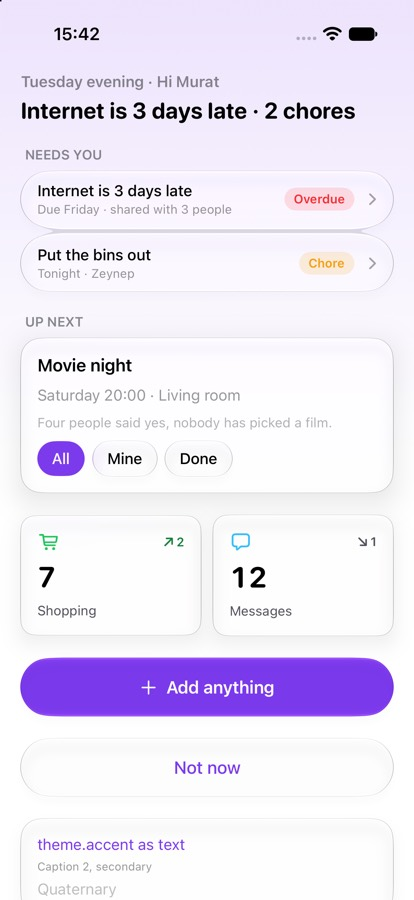
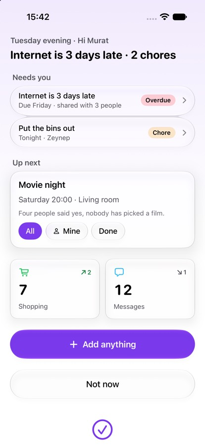
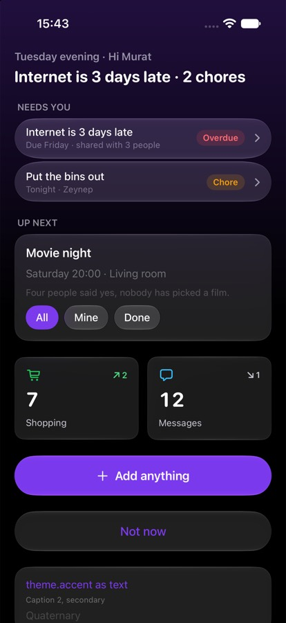
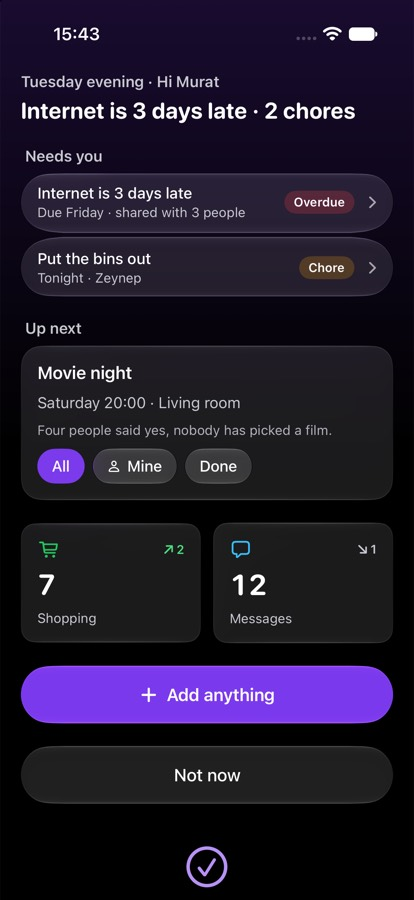
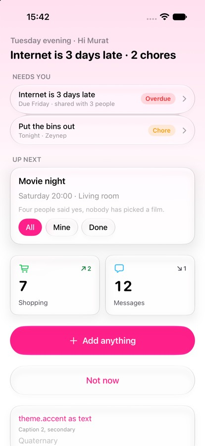
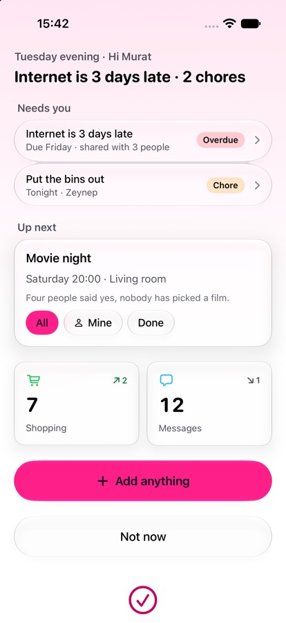
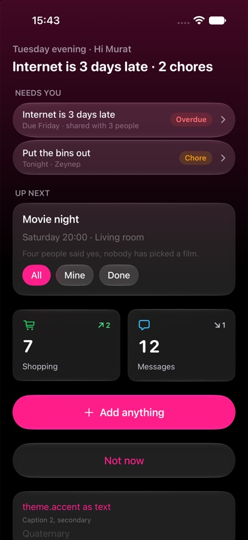
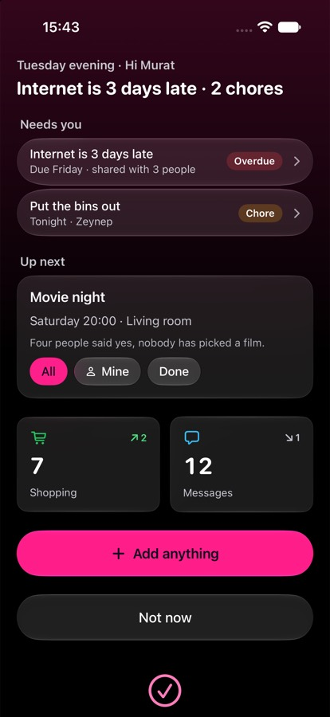
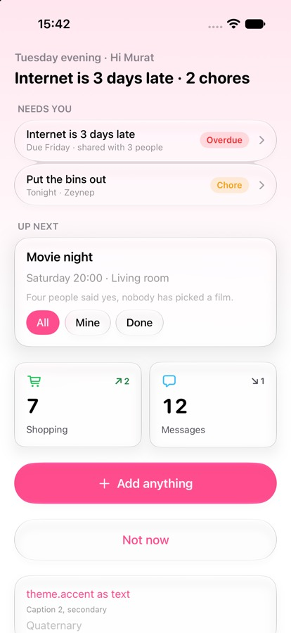
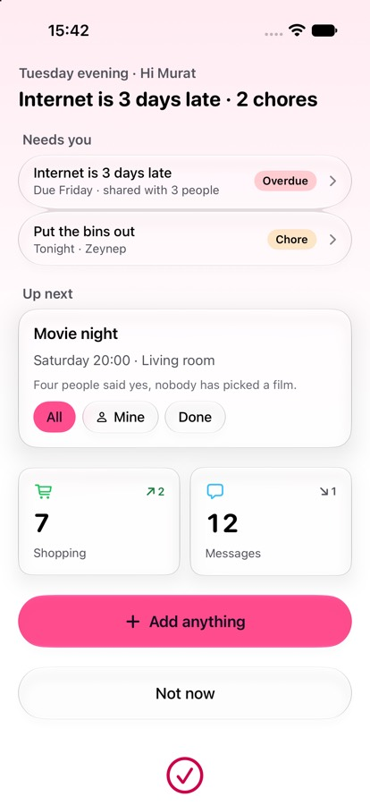
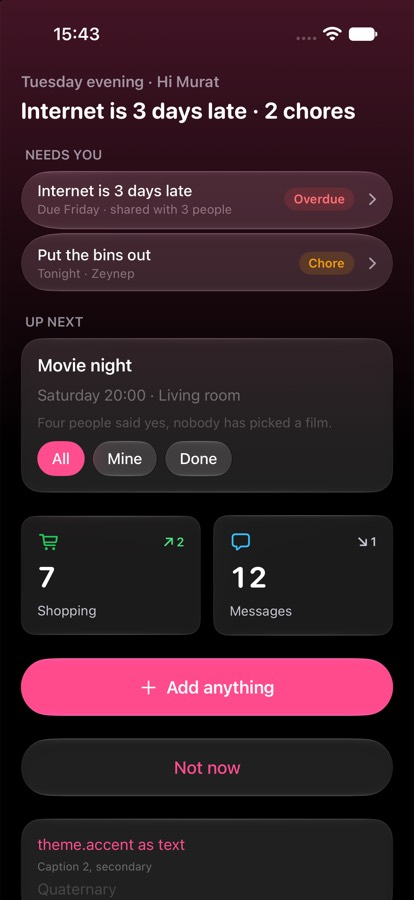
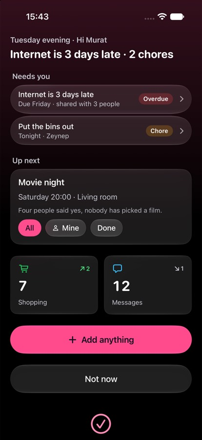
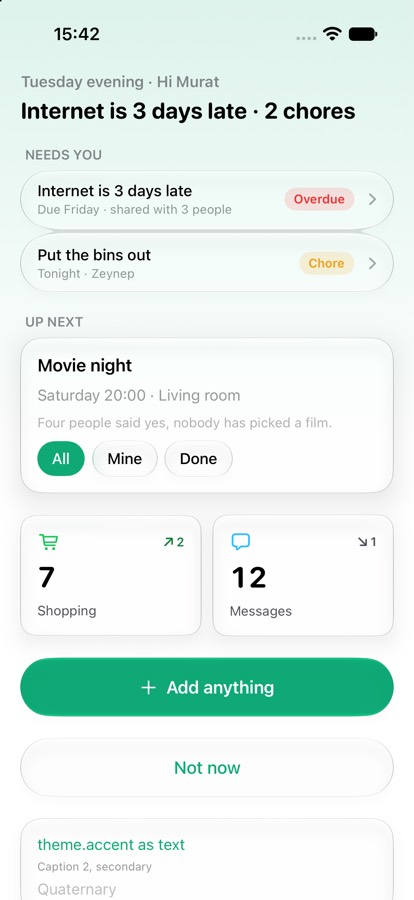
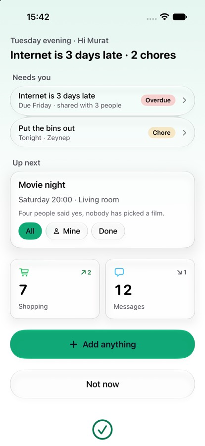
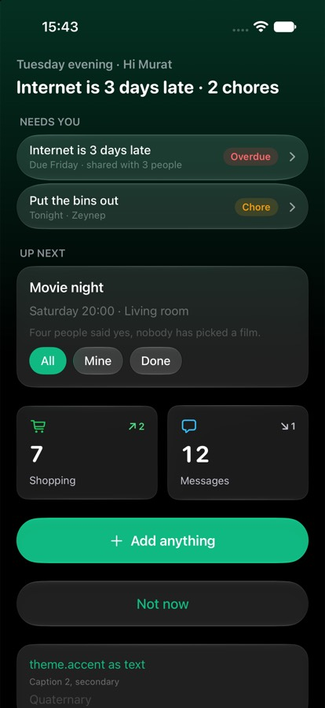
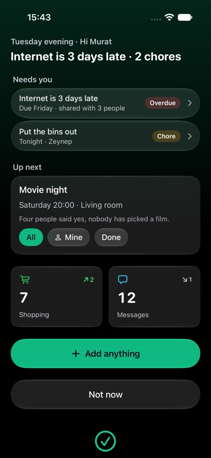
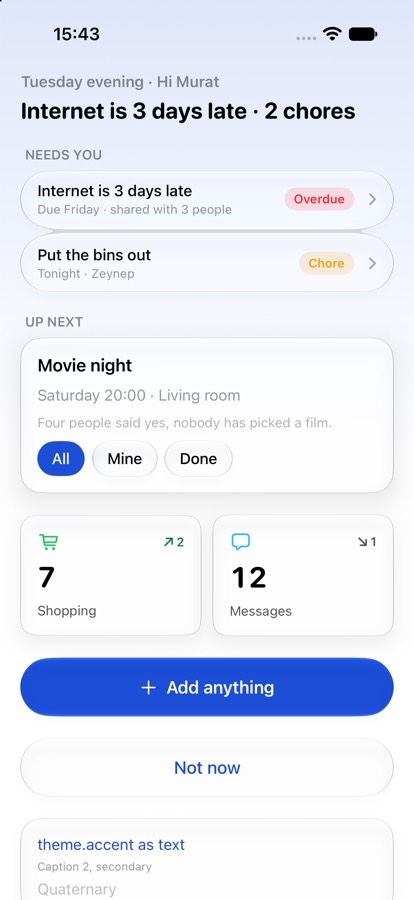
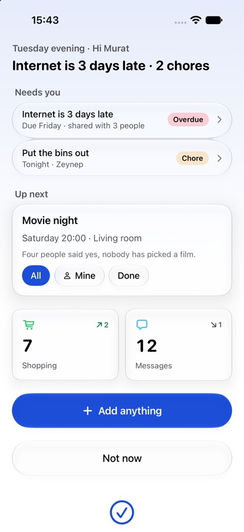
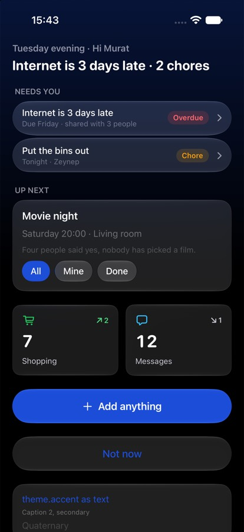
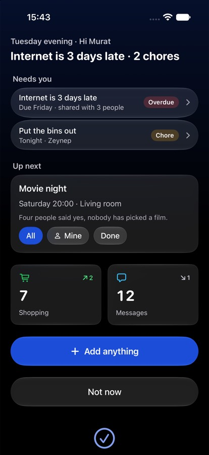
Checklist: screens that still need a hand pass
Done everywhere by the mechanical swap: .foregroundStyle(.secondary) to .secondaryText (366), .tertiary to .tertiaryText (17) and accent or tint words to .accentText (about 48). Done by hand: Today, Settings, shared components, tokens. Still to do, by screen:
- Ternaries that pick a text style (
cond ? .secondary : .primary, 80 of them) were not swapped: rewrite asAnyShapeStyleorPalette.textSecondary. - Words in a tint: grep
foregroundStyle(tint),Palette.warning,Palette.success(83 uses),Palette.statXxxandkind.tintused as text, in Finance, Issues (IssueVisuals), Calendar, Shopping, Movies, Messages. caption2for words (179): Calendar, Finance, Issues, Messages, Inbox.- Fixed text sizes: Finance (28 / 44 pt amounts), Dinner (7), Notes (6), CalendarGrid (6), EventSheets (5): use
@ScaledMetricor a text style. - Section headers: Finance, Issues, Movies, Dinner, Recipes use
SectionHeaderor their own capitals; move the capitals (Recipes, Inbox, Calendar, Plus details, Event sheets) to.groupLabel(). - Paywall, Plus details and the shop (
CompanionShop,SparklePackCard): white on accent in hand-built buttons,ProPreviewopacity text; check on Neon Night and Retro Wave. Palette.statXxx, event and issue colours as text (amber 2.15, sky 2.1, green 2.3 on white): glyph or wash only.- Notes (sticky notes,
.black.opacity(0.45)on a pastel): 4.5:1 is not met by the second line. - Reduce Transparency and Increase Contrast: glass falls back to system values; verify each screen once with both on.